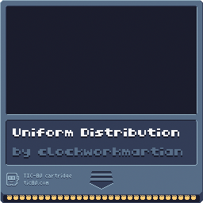

Nature of Code - Uniforms
I noticed recently that the Nature of Code book has appeared in a new edition using p5js! I've been wanting to read this book for awhile and play with the exercises but couldn't seem to find the time among other things going on. I've also been playing around with the idea of making some tiny games using this fantasy console called tic80 so I figured it's 2025, why not both? So this blog series will cover my adventures in working through Nature of Code and porting the examples to work in tic80... hopefully.
There's one more teensy challenge, I didn't want to work through this with Javascript. I work with Javascript every day for $dayjob and like to play around with other things at home to expand my brain a little, hopefully, probably not. Either way I was reading something about Janet on some website or other and realized it was also on the list of languages tic80 supported. Funny coincidence! So anyway, here we go.
The first chapter of Nature of Code is all about randomness. In today's post I'm working through roughly the second example of chapter 0 that describes using the uniform distribution. The goals is to make this 20 bar-chart-like display that tics up as a random number generator uniformly chooses one of the 20 and adds 1 to it's total.
I needed to write a random function to make calculating discrete ranges of random numbers easier and to better match the examples from NoC. I also did this example in Javascript in tic80 and was pleasantly surprised to see that my Janet version used less tokens!
# title: Uniform Distribution
# author: clockworkmartian
# desc: from nature of code chatper 0
# site: none
# license: MIT License
# version: 0.1
# script: janet
# strict: true
(use tic80)
(var randomCounts @[])
(def total 20)
(defn random [min max]
(def n (math/ceil min))
(def x (math/floor max))
(+ n
(math/floor
(*
(math/random)
(+ (- x n) 1)))))
(defn drawRectangles []
(def index (random 0 (- total 1)))
(def w (/ 240 total))
(put randomCounts index (++ (randomCounts index)))
(for x 0 total
(rect (* x w)
(- 136 (randomCounts x))
(- w 1)
(randomCounts x)
8)))
(defn BOOT []
(repeat total
(array/push randomCounts 0)))
(defn TIC []
(cls 13)
(print "Uniform Distribution" 5 5)
(drawRectangles))
You can grab the cartridge for this in PNG format:
